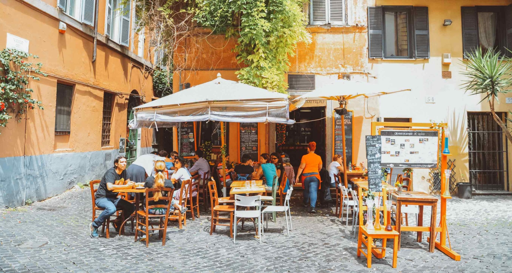
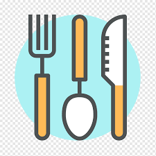

Sobre o Restaurante ao Contrário

Localizada em Curitiba o Restaurante ao Contrário traz o que há de melhor para comer. Fundada em 2022, o Restaurante ao Contrário já é destaque nas redes sociais.
Nossa missão é: "Trazer uma nova experiência para os clientes".
Oferecemos uma nova tradição e experiênciasoara nossos clientes.